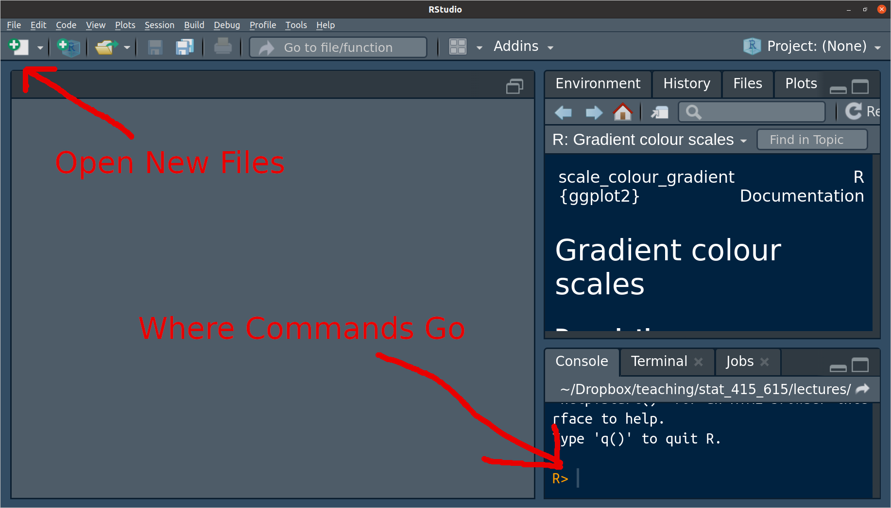
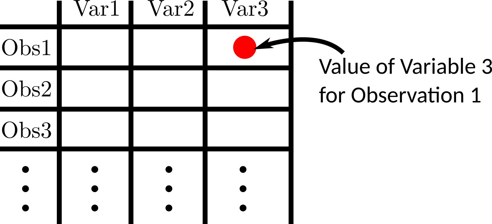

help(log)Introduction to R
Introduction
R is a statistical programming language designed to analyze data.
This is not an R course. But you need to know some tools to summarize/plot/model data.
R is free, widely used, more generally applicable (beyond linear regression), and a useful tool for reproducibility. So this is what we will use.
Python would have been a good choice too, but it is worse at basic stats (this is controversial).
Installation
Install here R : https://cran.r-project.org/
Install R Studio here: https://www.rstudio.com/
NOTE: R is a programming language. R Studio is an IDE, a program for interacting with programming language (specifically R in this case). Thus, on your resume, you should say that you know R, not R Studio.
Before we begin
I cannot teach you everything there is to know in R. When you know the name of a function, but don’t know the commands, use the
help()function. For example, to learn more aboutlog()typeAlternatively, if you do not know the name of the function, you can Google the functionality you want. Googling coding solutions is a lot of what real data scientists do. Just append what you are Googling with “in R”. So, for example, “linear mixed effects models in R”.
Nowadays, folks also use generative AI. You are all familiar with this. I think this is fine, but make sure you understand its output. Remember, I can call you in and reduce your grade if it spits out something weird and you can’t explain it to me.
R Basics
When you first open up R Studio, it should look something like this

The area to the right of the carrot “
>” is called a prompt. You insert commands into the prompt.You can use R as a powerful calculator. Try typing some of the following into the command prompt:
3 * 7 9 / 3 4 + 6 3 - 9 (3 + 5) * 6 3 ^ 2 4 ^ 2
What do you think the following will evaluate to? Try to guess before running it in R:
8 / 4 + 3 * 2 ^ 214
- R consists of two things: variables and functions (computer scientists would probably disagree with this categorization).
Variables
A variable stores a value. You use the assignment operator “
<-” to assign values to variables. For example, we can assign the value of10to the variablex.x <- 10- It is possible to use
=, and I think there is nothing wrong with that. But for some reason the field has decided to only use<-, so you should too.
- It is possible to use
Whenever we use
xlater, it will use the value of 10x[1] 10This is useful because you can reuse this value over and over again:
y <- 0 x + y x * y x / y x - yTo assign a “string” (a fancy way to say a word) to
x, put the string in quotes. For example, we can assign the value of"Hello World"tox.x <- "Hello World" x[1] "Hello World"
Functions
Functions take objects (such as numbers or variables) as input and output new objects. Let’s look at a simple function that takes the log of a number:
log(x = 4, base = 2)The inputs are called “arguments”. Generally, every function will be for the form:
function_name(arg1 = val1, arg2 = val2, ...)If you do not specify the name of the argument, R will assume you are assigning in their order.
log(4, 2)You can change the order of the arguments if you specify them.
log(base = 2, x = 4)To see the list of all possible arguments of a function, use the
help()function:help(log)In the help file, there are often default values for an argument. For example, the following indicates the the default value of
baseisexp(1).log(x, base = exp(1))This indicates that you can omit the
baseargument and R will assume that it should beexp(1).log(x = 4, base = exp(1))[1] 1.386log(x = 4)[1] 1.386If an argument does not have a default, then it must be specified when calling a function.
Type this:
log(x = 4,The “
+” indicates that R is expecting more input (you forgot either a parentheses or a quotation mark). You can get back to the prompt by hitting the ESCAPE key.
Useful Functions
c()creates a vector (sequence of values)y <- c(8, 1, 3, 4, 2) y[1] 8 1 3 4 2You can perform vectorized operations on these vectors
y + 2[1] 10 3 5 6 4y / 2[1] 4.0 0.5 1.5 2.0 1.0y - 2[1] 6 -1 1 2 0exp(): Exponentiation. This is the inverse oflog().exp(10)[1] 22026log(exp(10))[1] 10sqrt(): Square rootsqrt(9)[1] 3mean(): The mean of a vectormean(y)[1] 3.6sd()The standard deviation of a vectorsd(y)[1] 2.702sum(): Sum the values of a vector.sum(y)[1] 18seq(): Create a sequence of numbersseq(from = 1, to = 10)[1] 1 2 3 4 5 6 7 8 9 10head(): Show the first six values of an object.
Calculate this in R (hint: pi is \(\pi\) in R) \[
\frac{1}{\sqrt{2\pi}}e^{-1.3^2}
\]
exp(-1.3^2) / sqrt(2 * pi)[1] 0.07361Create the following vector \(x = (1, -2, 1.3)\). What is the mean and standard deviation of this variable?
x <- c(1, -2, 1.3)
mean(x)[1] 0.1sd(x)[1] 1.825Create a vector from 1 to 1000, take ths square root of each element, then sum them up.
sum(sqrt(seq(1, 1000)))[1] 21097What does the by argument do in seq()? Try it out.
Creates increments of 2 instead of 1.
seq(1, 10, by = 2)[1] 1 3 5 7 9R Packages
A package is a collection of functions that don’t come with R by default.
There are many many packages available. If you need to do any data analysis, there is probably an R package for it.
Using
install.packages(), you can install packages that contain functions and datasets that are not available by default. Do this now with the tidyverse package:install.packages("tidyverse")You will only need to install a package once per computer. Once it is installed you can gain access to all of the functions and datasets in a package by using the
library()function.library(tidyverse)You will need to run
library()at the start of every R session if you want to use the functions in a package.When I want to write the name of a function, I will write it like
this().
Data Frames
The fundamental unit object of data analysis is the data frame.
A data frame has variables in the columns, and observations in the rows.

R comes with a bunch of famous datasets in the form of a data frame. Such as the
airqualitydataset, which contains daily air quality measurements in New York from 1973.data("airquality") head(airquality)Ozone Solar.R Wind Temp Month Day 1 41 190 7.4 67 5 1 2 36 118 8.0 72 5 2 3 12 149 12.6 74 5 3 4 18 313 11.5 62 5 4 5 NA NA 14.3 56 5 5 6 28 NA 14.9 66 5 6You can extract individual variables from a data frame using
$airquality$Ozone[1] 41 36 12 18 NA 28 23 19 8 NA 7 16 11 14 18 14 34 6 [19] 30 11 1 11 4 32 NA NA NA 23 45 115 37 NA NA NA NA NA [37] NA 29 NA 71 39 NA NA 23 NA NA 21 37 20 12 13 NA NA NA [55] NA NA NA NA NA NA NA 135 49 32 NA 64 40 77 97 97 85 NA [73] 10 27 NA 7 48 35 61 79 63 16 NA NA 80 108 20 52 82 50 [91] 64 59 39 9 16 78 35 66 122 89 110 NA NA 44 28 65 NA 22 [109] 59 23 31 44 21 9 NA 45 168 73 NA 76 118 84 85 96 78 73 [127] 91 47 32 20 23 21 24 44 21 28 9 13 46 18 13 24 16 13 [145] 23 36 7 14 30 NA 14 18 20You can explore these in a spreadsheet format using
View()(note the capital “V”). Don’t ever have this in a file though, directly write it in the console.View(airquality)
Reading in Data Frames
Most datasets will nead to be loaded into R. To do so, we will use the
{readr}package.library(readr)The only function I will require you to know from this package is
read_csv(), which loads in data from a CSV file (“Comma-separated values”), a very popular format for storing data.If you have the CSV file somewhere on your computer, then specify the path from the current working directory, and assign the data frame to a variable.
For other file formats, you need to use other functions, such as
read_tsv(),read_table(),read_fwf(), etc. I will try to make sureread_csv()works for all datasets in this course.I will typicaly post course datasets at https://dcgerard.github.io/stat_320/data.html. You can load those data into R by pasting their URL’s into
read_csv().lead <- read_csv("https://dcgerard.github.io/stat_320/data/lead.csv") head(lead)# A tibble: 6 × 40 id area ageyrs sex iqv_inf iqv_comp iqv_ar iqv_ds iqv_raw iqp_pc iqp_bd <dbl> <chr> <dbl> <chr> <dbl> <dbl> <dbl> <dbl> <dbl> <dbl> <dbl> 1 101 2.5-4… 11.1 male 3 4 3 5 15 10 8 2 102 2.5-4… 9.42 male 7 9 7 6 29 8 7 3 103 2.5-4… 11.1 male 4 9 5 3 21 10 7 4 104 1-2.5 6.92 male 4 6 6 6 22 5 8 5 105 0-1 11.2 male 5 4 8 5 22 5 10 6 106 1-2.5 6.5 male 5 12 11 9 37 14 7 # ℹ 29 more variables: iqp_oa <dbl>, iqp_cod <dbl>, iqp_raw <dbl>, # hh_index <dbl>, iqv <dbl>, iqp <dbl>, iqf <dbl>, iq_type <chr>, # lead_grp <chr>, Group <chr>, ld72 <dbl>, ld73 <dbl>, fst2yrs <chr>, # totyrs <dbl>, pica <chr>, colic <chr>, clumsi <chr>, irrit <chr>, # convul <chr>, `_2plat_r` <dbl>, `_2plar_l` <dbl>, visrea_r <dbl>, # visrea_l <dbl>, audrea_r <dbl>, audrea_l <dbl>, fwt_r <dbl>, fwt_l <dbl>, # hyperact <dbl>, maxfwt <dbl>
Load in the birthweight data into R and print out the first six rows.
birthweight <- read_csv("https://dcgerard.github.io/stat_320/data/birthweight.csv")Rows: 1000 Columns: 2
── Column specification ────────────────────────────────────────────────────────
Delimiter: ","
dbl (2): id, weight
ℹ Use `spec()` to retrieve the full column specification for this data.
ℹ Specify the column types or set `show_col_types = FALSE` to quiet this message.head(birthweight)# A tibble: 6 × 2
id weight
<dbl> <dbl>
1 0 116
2 1 124
3 2 119
4 3 100
5 4 127
6 5 103Basic Data Frame Manipulations
You will need to know just a few data frame manipulations, which we will perform using the
{dplyr}package.library(dplyr)The first argument for
{dplyr}functions is always the data frame you are modifying. The following arguments typically involve the columns of that data frame.Use the
mutate()function from the{dplyr}package to make variable transformations.lead <- mutate(lead, log_iqv_inf = log(iqv_inf)) head(lead)# A tibble: 6 × 41 id area ageyrs sex iqv_inf iqv_comp iqv_ar iqv_ds iqv_raw iqp_pc iqp_bd <dbl> <chr> <dbl> <chr> <dbl> <dbl> <dbl> <dbl> <dbl> <dbl> <dbl> 1 101 2.5-4… 11.1 male 3 4 3 5 15 10 8 2 102 2.5-4… 9.42 male 7 9 7 6 29 8 7 3 103 2.5-4… 11.1 male 4 9 5 3 21 10 7 4 104 1-2.5 6.92 male 4 6 6 6 22 5 8 5 105 0-1 11.2 male 5 4 8 5 22 5 10 6 106 1-2.5 6.5 male 5 12 11 9 37 14 7 # ℹ 30 more variables: iqp_oa <dbl>, iqp_cod <dbl>, iqp_raw <dbl>, # hh_index <dbl>, iqv <dbl>, iqp <dbl>, iqf <dbl>, iq_type <chr>, # lead_grp <chr>, Group <chr>, ld72 <dbl>, ld73 <dbl>, fst2yrs <chr>, # totyrs <dbl>, pica <chr>, colic <chr>, clumsi <chr>, irrit <chr>, # convul <chr>, `_2plat_r` <dbl>, `_2plar_l` <dbl>, visrea_r <dbl>, # visrea_l <dbl>, audrea_r <dbl>, audrea_l <dbl>, fwt_r <dbl>, fwt_l <dbl>, # hyperact <dbl>, maxfwt <dbl>, log_iqv_inf <dbl>Use
glimpse()to get a brief look at the data frame.glimpse(lead)Rows: 124 Columns: 41 $ id <dbl> 101, 102, 103, 104, 105, 106, 107, 108, 109, 110, 111, 112… $ area <chr> "2.5-4.1", "2.5-4.1", "2.5-4.1", "1-2.5", "0-1", "1-2.5", … $ ageyrs <dbl> 11.08, 9.42, 11.08, 6.92, 11.25, 6.50, 6.92, 15.00, 7.17, … $ sex <chr> "male", "male", "male", "male", "male", "male", "male", "f… $ iqv_inf <dbl> 3, 7, 4, 4, 5, 5, 7, 3, 13, 7, 6, 11, 11, 6, 9, 4, 13, 4, … $ iqv_comp <dbl> 4, 9, 9, 6, 4, 12, 9, 1, 10, 9, 10, 14, 12, 4, 11, 6, 17, … $ iqv_ar <dbl> 3, 7, 5, 6, 8, 11, 10, 3, 14, 12, 6, 14, 8, 5, 11, 4, 13, … $ iqv_ds <dbl> 5, 6, 3, 6, 5, 9, 7, 6, 13, 9, 7, 11, 8, 8, 9, 8, 14, 12, … $ iqv_raw <dbl> 15, 29, 21, 22, 22, 37, 33, 13, 50, 37, 29, 50, 39, 23, 40… $ iqp_pc <dbl> 10, 8, 10, 5, 5, 14, 10, 6, 8, 6, 6, 13, 8, 9, 14, 9, 16, … $ iqp_bd <dbl> 8, 7, 7, 8, 10, 7, 8, 2, 15, 9, 8, 13, 9, 7, 17, 8, 16, 9,… $ iqp_oa <dbl> 8, 10, 7, 5, 13, 7, 7, 3, 14, 12, 3, 15, 11, 6, 13, 13, 16… $ iqp_cod <dbl> 5, 9, 20, 13, 12, 10, 16, 8, 9, 13, 9, 20, 12, 12, 16, 12,… $ iqp_raw <dbl> 31, 34, 44, 31, 40, 38, 41, 19, 46, 40, 26, 61, 40, 34, 60… $ hh_index <dbl> 77, 77, 30, 77, 62, 72, 54, 73, 22, 77, 63, 48, 48, 48, 48… $ iqv <dbl> 61, 82, 70, 72, 72, 95, 89, 57, 116, 95, 82, 116, NA, 74, … $ iqp <dbl> 85, 90, 107, 85, 100, 97, 101, 64, 111, 100, 76, 136, 100,… $ iqf <dbl> 70, 85, 86, 76, 84, 96, 94, 56, 115, 97, 77, 128, NA, 80, … $ iq_type <chr> "WISC", "WISC", "WISC", "WISC", "WISC", "WISC", "WISC", "W… $ lead_grp <chr> "control", "control", "control", "control", "control", "co… $ Group <chr> "control", "control", "control", "control", "control", "co… $ ld72 <dbl> 25, 31, 30, 29, 2, 29, 25, 24, 24, 31, 21, 29, 32, 36, 30,… $ ld73 <dbl> 18, 28, 29, 30, 34, 25, 24, 15, 16, 24, 19, 27, 29, 32, 25… $ fst2yrs <chr> "no", "no", "no", "no", "yes", "no", "no", "yes", "no", "n… $ totyrs <dbl> 11, 6, 5, 5, 11, 6, 6, 15, 7, 7, 12, 10, 12, 12, 10, 10, 1… $ pica <chr> "no", "no", "no", "no", "no", "no", "no", "no", "no", "no"… $ colic <chr> "no", "no", "no", "no", "no", "no", "no", "no", "no", "no"… $ clumsi <chr> "no", "no", "no", "no", "no", "no", "no", "yes", "no", "no… $ irrit <chr> "no", "no", "no", "yes", "yes", "no", "no", "yes", "no", "… $ convul <chr> "no", "no", "no", "no", "no", "no", "no", "no", "no", "no"… $ `_2plat_r` <dbl> 16, 17, 16, 11, 17, 16, 10, 19, 15, 16, 17, 17, 15, 23, 19… $ `_2plar_l` <dbl> 16, 16, 17, 9, 16, 14, 13, 14, 13, 11, 16, 17, 14, 21, 20,… $ visrea_r <dbl> 36, 23, 20, 34, 26, 29, 29, 30, 31, 26, 19, 22, 19, 26, 17… $ visrea_l <dbl> 38, 19, 24, 42, 34, 26, 29, 32, 28, 25, 19, 24, 17, 23, 16… $ audrea_r <dbl> 27, 18, 16, 35, 31, 28, 30, 33, 31, 27, 16, 22, 18, 25, 17… $ audrea_l <dbl> 25, 28, 17, 30, 33, 27, 27, 24, 29, 21, 19, 23, 20, 28, 16… $ fwt_r <dbl> 72, 61, 46, 48, 51, 49, 50, 58, 50, 51, 59, 65, 57, 44, 74… $ fwt_l <dbl> 52, 48, 49, 41, 42, 35, 39, 58, 40, 37, 44, 48, 47, 53, 63… $ hyperact <dbl> NA, 0, NA, 2, NA, 0, 0, NA, 0, 0, NA, 1, NA, NA, NA, 2, NA… $ maxfwt <dbl> 72, 61, 49, 48, 51, 49, 50, 58, 50, 51, 59, 65, 57, 53, 74… $ log_iqv_inf <dbl> 1.0986, 1.9459, 1.3863, 1.3863, 1.6094, 1.6094, 1.9459, 1.…Use
View()to see a spreadsheet of the data frame (never put this in a Quarto file). Note the capital “V”.View(lead)Use
rename()to rename variables.lead <- rename(lead, ID = id) head(lead)# A tibble: 6 × 41 ID area ageyrs sex iqv_inf iqv_comp iqv_ar iqv_ds iqv_raw iqp_pc iqp_bd <dbl> <chr> <dbl> <chr> <dbl> <dbl> <dbl> <dbl> <dbl> <dbl> <dbl> 1 101 2.5-4… 11.1 male 3 4 3 5 15 10 8 2 102 2.5-4… 9.42 male 7 9 7 6 29 8 7 3 103 2.5-4… 11.1 male 4 9 5 3 21 10 7 4 104 1-2.5 6.92 male 4 6 6 6 22 5 8 5 105 0-1 11.2 male 5 4 8 5 22 5 10 6 106 1-2.5 6.5 male 5 12 11 9 37 14 7 # ℹ 30 more variables: iqp_oa <dbl>, iqp_cod <dbl>, iqp_raw <dbl>, # hh_index <dbl>, iqv <dbl>, iqp <dbl>, iqf <dbl>, iq_type <chr>, # lead_grp <chr>, Group <chr>, ld72 <dbl>, ld73 <dbl>, fst2yrs <chr>, # totyrs <dbl>, pica <chr>, colic <chr>, clumsi <chr>, irrit <chr>, # convul <chr>, `_2plat_r` <dbl>, `_2plar_l` <dbl>, visrea_r <dbl>, # visrea_l <dbl>, audrea_r <dbl>, audrea_l <dbl>, fwt_r <dbl>, fwt_l <dbl>, # hyperact <dbl>, maxfwt <dbl>, log_iqv_inf <dbl>Use
filter()to remove rows.- Use
==to select rows based on equality - Use
<and>to select rows based on inequality - Use
<=and>=to select rows based on inequality/equality.
filter(lead, Group == "control")# A tibble: 78 × 41 ID area ageyrs sex iqv_inf iqv_comp iqv_ar iqv_ds iqv_raw iqp_pc iqp_bd <dbl> <chr> <dbl> <chr> <dbl> <dbl> <dbl> <dbl> <dbl> <dbl> <dbl> 1 101 2.5-… 11.1 male 3 4 3 5 15 10 8 2 102 2.5-… 9.42 male 7 9 7 6 29 8 7 3 103 2.5-… 11.1 male 4 9 5 3 21 10 7 4 104 1-2.5 6.92 male 4 6 6 6 22 5 8 5 105 0-1 11.2 male 5 4 8 5 22 5 10 6 106 1-2.5 6.5 male 5 12 11 9 37 14 7 7 107 2.5-… 6.92 male 7 9 10 7 33 10 8 8 108 0-1 15 fema… 3 1 3 6 13 6 2 9 109 1-2.5 7.17 fema… 13 10 14 13 50 8 15 10 110 1-2.5 7.25 male 7 9 12 9 37 6 9 # ℹ 68 more rows # ℹ 30 more variables: iqp_oa <dbl>, iqp_cod <dbl>, iqp_raw <dbl>, # hh_index <dbl>, iqv <dbl>, iqp <dbl>, iqf <dbl>, iq_type <chr>, # lead_grp <chr>, Group <chr>, ld72 <dbl>, ld73 <dbl>, fst2yrs <chr>, # totyrs <dbl>, pica <chr>, colic <chr>, clumsi <chr>, irrit <chr>, # convul <chr>, `_2plat_r` <dbl>, `_2plar_l` <dbl>, visrea_r <dbl>, # visrea_l <dbl>, audrea_r <dbl>, audrea_l <dbl>, fwt_r <dbl>, fwt_l <dbl>, …filter(lead, ageyrs < 4)# A tibble: 7 × 41 ID area ageyrs sex iqv_inf iqv_comp iqv_ar iqv_ds iqv_raw iqp_pc iqp_bd <dbl> <chr> <dbl> <chr> <dbl> <dbl> <dbl> <dbl> <dbl> <dbl> <dbl> 1 403 0-1 3.92 male 5 6 10 7 28 12 8 2 406 1-2.5 3.75 male 9 4 10 7 30 8 11 3 504 1-2.5 3.75 male 8 7 8 7 30 8 7 4 505 1-2.5 3.75 fema… 6 5 6 3 20 8 12 5 602 1-2.5 3.75 fema… 6 11 8 11 36 11 10 6 606 2.5-4… 3.83 male 12 9 18 8 47 12 10 7 607 0-1 3.92 male 8 4 11 1 24 13 7 # ℹ 30 more variables: iqp_oa <dbl>, iqp_cod <dbl>, iqp_raw <dbl>, # hh_index <dbl>, iqv <dbl>, iqp <dbl>, iqf <dbl>, iq_type <chr>, # lead_grp <chr>, Group <chr>, ld72 <dbl>, ld73 <dbl>, fst2yrs <chr>, # totyrs <dbl>, pica <chr>, colic <chr>, clumsi <chr>, irrit <chr>, # convul <chr>, `_2plat_r` <dbl>, `_2plar_l` <dbl>, visrea_r <dbl>, # visrea_l <dbl>, audrea_r <dbl>, audrea_l <dbl>, fwt_r <dbl>, fwt_l <dbl>, # hyperact <dbl>, maxfwt <dbl>, log_iqv_inf <dbl>filter(lead, ageyrs > 4, ageyrs < 5)# A tibble: 14 × 41 ID area ageyrs sex iqv_inf iqv_comp iqv_ar iqv_ds iqv_raw iqp_pc iqp_bd <dbl> <chr> <dbl> <chr> <dbl> <dbl> <dbl> <dbl> <dbl> <dbl> <dbl> 1 401 2.5-… 4.33 male 6 13 13 9 41 11 11 2 402 1-2.5 4.83 fema… 9 7 13 8 37 11 12 3 404 0-1 4.58 male 6 3 4 2 15 12 7 4 405 0-1 4.5 male 6 9 9 12 36 8 9 5 407 2.5-… 4.25 male 7 4 8 6 25 10 12 6 408 2.5-… 4.33 male 7 6 4 5 22 9 6 7 409 1-2.5 4.33 fema… 8 8 11 11 38 11 9 8 411 1-2.5 4.33 fema… 8 9 14 7 38 14 9 9 412 2.5-… 4.75 fema… 7 7 10 8 32 13 13 10 414 0-1 4.5 male 6 3 7 2 18 6 8 11 501 0-1 4.17 male 11 7 8 5 31 11 10 12 502 2.5-… 4.58 male 7 7 9 3 26 10 3 13 601 1-2.5 4.33 male 9 6 9 8 32 8 9 14 604 1-2.5 4.58 male 7 10 6 12 35 9 11 # ℹ 30 more variables: iqp_oa <dbl>, iqp_cod <dbl>, iqp_raw <dbl>, # hh_index <dbl>, iqv <dbl>, iqp <dbl>, iqf <dbl>, iq_type <chr>, # lead_grp <chr>, Group <chr>, ld72 <dbl>, ld73 <dbl>, fst2yrs <chr>, # totyrs <dbl>, pica <chr>, colic <chr>, clumsi <chr>, irrit <chr>, # convul <chr>, `_2plat_r` <dbl>, `_2plar_l` <dbl>, visrea_r <dbl>, # visrea_l <dbl>, audrea_r <dbl>, audrea_l <dbl>, fwt_r <dbl>, fwt_l <dbl>, # hyperact <dbl>, maxfwt <dbl>, log_iqv_inf <dbl>- Use
The birthweight data is in ounces. There are abour 28.3495 grams in an ounce. Create a new variable called weight_g that is the weight of the baby in grams.
birthweight <- mutate(birthweight, weight_g = 28.3495 * weight)
glimpse(birthweight)From the birthweight data, select just babies that are greater than or equal to 150 ounces.
filter(birthweight, weight >= 150)From the lead data, select individuals who are both in the control group and are at least 15.
filter(lead, Group == "control", ageyrs >= 15)From the lead data, rename ageyrs to just age
rename(lead, age = ageyrs)Summary
Here is the list of basic R stuff I expect you to know, more or less off the top of your head. We will add to this list throughout the semester.
help(): Open help file.install.packages(): Install an external R package. Do this once per computer for each package.library(): Load the functions of an external R package so you can use them. Do this each time you start up R for each package.<-: Variable assignment.+,-,/,*: Arithmetic operations.^: Powers.sqrt(): Square root.log(): Log (base e).$: Extracting a variable from a data frame.View(): Look at a spreadsheet of data.head(): See first six elements.- From
{readr}:read_csv(): Loading in tabular data.
- From
{dplyr}:glimpse(): Look at a data frame.mutate(): Variable transformation.rename(): Variable renaming.filter(): Select rows based on variable values.
- From
{ggplot2}(see 01_ggplot).ggplot2(): Set a dataset and aesthetic map.geom_point(): Make a scatterplot.geom_histogram(): Make a histogram.geom_bar(): Make a bar plot.geom_boxplot(): Make a box plot.geom_smooth(): Add a smoother.